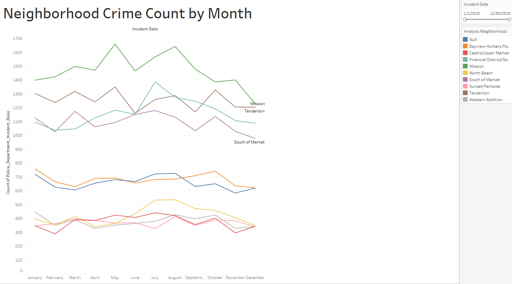
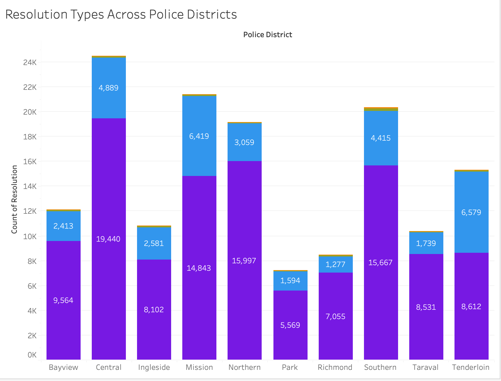

Addressing Crime in San Francisco
A five-person team turned a year of San Francisco's incident data into hotspots, patterns, and a funding plan — built with SQL, Python, and Tableau.
Role: Data Analyst, 5-person team (COOP Careers) · Sep – Oct 2024 · SQL · Python · Tableau
The Problem
San Francisco has one of the highest property-crime rates of any major U.S. city — roughly 67 incidents per 1,000 residents, and ranked #1 nationally for property crime. Our team was tasked with one question: where, when, and what kind of crime is happening — so the city can put limited enforcement and prevention dollars where they actually move the needle.
My Role
I worked as one of five analysts. I helped frame the guiding questions (where / what / when / resolution status), wrote SQL to extract and clean the raw incident feed, ran statistical analysis in Python to surface patterns, and built Tableau views to make the findings legible to non-technical decision-makers. The charts below are from our actual Tableau workbook.
What the data showed



- Larceny theft is the dominant crime — roughly 3× the next category, and over half of it is theft from vehicles. In SF, the odds of a car break-in run about 1 in 127.
- Hotspots are ~56.7× denser than the safest areas. Mission and Tenderloin versus Treasure Island and Seacliff — a gap driven by population density and socioeconomic pressure.
- Timing is predictable. Crime spikes at noon, 2pm, 6pm, and midnight; Fridays and Saturdays run hottest; summer-into-fall is the peak season.
- Most cases stay open. Open/active cases are the majority in every police district — the clearest signal that investigative capacity isn't keeping pace.
What we recommended
Environmental design (CPTED)
Better lighting in lots and public spaces, and layouts that improve natural visibility — targeted at the larceny-from-vehicle problem.
Expanded investigation team
Crimes are committed faster than they're solved. A dedicated unit to raise the clearance rate directly attacks the open-case backlog.
Restorative justice programs
Victim-centered healing and offender accountability to reduce repeat offending in the highest-density districts.
Property registration
Registering high-theft property classes to make resale harder and recovery easier — lowering the payoff of opportunistic theft.
Data: SFPD Incident Reports (2018), DataSF · Census Reporter · FBI UCR. Read as direction, not precision — single-year sample.